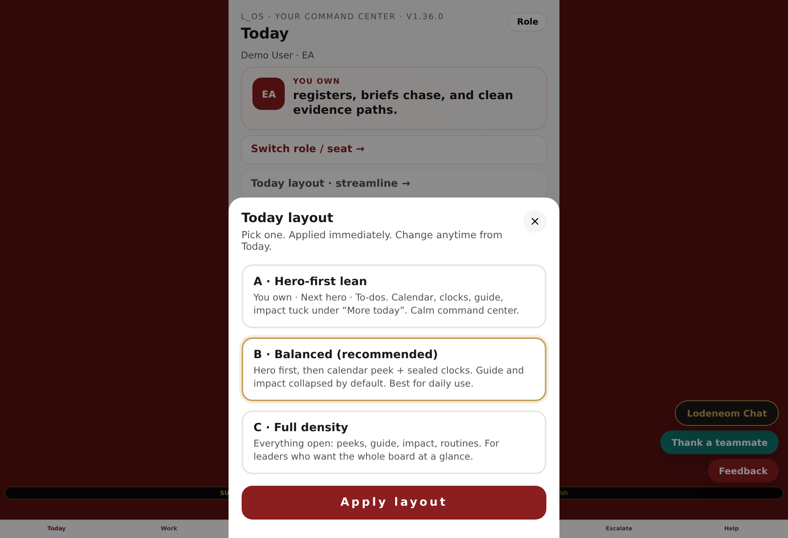

Why GitHub? Free forever, stable https:// link, easy updates. Files on the phone (Quick Look) will not install as a proper app.
0 What you need
- A free GitHub account
- Your L_OS file:
L_OS.html(the one that works on laptop) - Phone with Safari (iPhone) or Chrome (Android)
Visibility: For free GitHub Pages on a personal account, the repo must be Public. That means anyone with the link can open the app shell (your house data still lives in each device’s browser storage, not in the GitHub files). Use a hard-to-guess repo name if you want obscurity. Private repo + free Pages needs GitHub Pro — not required for house use.

Your laptop already shows Today — same app will open on the phone after hosting.
1 Create a GitHub repository
- Go to github.com/new
- Repository name: e.g.
los-app(any short name) - Set visibility to Public (needed for free Pages). Private only if you pay for GitHub Pro + Pages on private repos.
- Leave “Add a README” unchecked if you want a clean drop — or checked is fine
- Click Create repository
2 Upload L_OS as index.html
- On the empty repo page, click uploading an existing file (or Add file → Upload files)
- On your computer, rename a copy of
L_OS.htmltoindex.htmlNaming itindex.htmlmeans the site root opens the app without typing a long filename. - Drag
index.htmlinto the GitHub upload box - Scroll down → Commit changes
If you keep the name
L_OS.html, your URL will be https://YOU.github.io/los-app/L_OS.html — still works, just longer.3 Turn on GitHub Pages
- In the repo, open Settings
- Left sidebar → Pages
- Under Build and deployment → Source, choose Deploy from a branch
- Branch: main (or master) · folder: / (root)
- Click Save
- Wait 30–90 seconds, then refresh. GitHub shows a green box with your site URL like:
https://YOURNAME.github.io/los-app/
Open that URL on your laptop first. You should see the same L_OS splash / Today as below.
Splash · Enter workspace

Today after setup
4 iPhone · Safari · Home Screen
- On the iPhone, open the https://…github.io… link in Safari (not Chrome, not Files)
- Complete Step 1–3 if first run (same as laptop)
- Tap the Share button (square with ↑)
- Scroll and tap Add to Home Screen
- Name it L_OS → tap Add

First run · What is AIM-U?

Pick your seat
If you only see a grey document preview: you opened the file from Files. Use the GitHub https link in Safari instead.
5 Android · Chrome · Home Screen
- Open the same https://…github.io… link in Chrome
- Tap menu ⋮ → Install app or Add to Home screen
- Confirm. Open the icon like any app.
6 Confirm it works on the phone
You should be able to move through the main surfaces:

Work hub

Calendar
Tracker

EOD briefing
- Footer tabs respond
- Data you add stays after you close and reopen the Home Screen icon
- Help → picture guides (no video required)
7 Update later
- Repo → Add file → Upload files
- Upload the new
index.html(replaces the old) - Commit → wait ~1 minute → refresh phone (or pull-to-refresh)
Next after host is live: Phase-2 (email bridge, weekly pulse, real stakeholder link). Multi-device sync of the same data is later — each device keeps its own local storage until then.